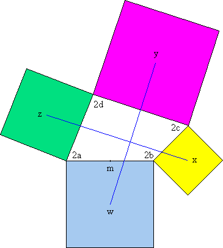

Solution to puzzle 62: Four squares on a quadrilateral
Represent the vertices of the quadrilateral by the complex numbers 2a, 2b, 2c, 2d, in the complex plane.
Then m, the midpoint of the line connecting 2a and 2b, is represented by a + b.
The vector from 2a to m is given by (a + b) - 2a = b - a.
Rotating this vector clockwise through 90° yields mw, the vector from m to the center of the square, w.
A rotation through 90° clockwise is achieved by multiplying by -i.
Hence the vector mw is given by -i(b - a) = (a - b)i.
Therefore w = a + b + (a - b)i.
We can similarly derive the complex number that represents the center of the other squares, yielding:
w = a + b + (a - b)i
x = b + c + (b - c)i
y = c + d + (c - d)i
z = d + a + (d - a)i
Hence the line segments joining the centers of opposite squares are given by the following two vectors:
| y - w | = c + d - a - b + (c - d - a + b)i |
| z - x | = d + a - b - c + (d - a - b + c)i |
Therefore z - x = -i(y - w).
This tells us that vector xz is obtained by rotating wy through 90°.
Therefore line segments wy and xz lie on perpendicular lines and are of equal length.
Remarks
A very similar proof can be obtained using vector algebra in the Cartesian plane. There, the proof proceeds by showing that the dot product of the vectors representing the two line segments is zero, and their magnitudes are equal. The remarkable economy of the complex plane proof arises from the ease with which the vector mw can be obtained simply by multiplying (b - a) by -i.
Note that two lines are said to be perpendicular if they meet at right angles. We have not proved above that the two line segments necessarily meet, and, indeed, this is not always the case. Hence the statement of the theorem merely specifies that the two line segments lie on perpendicular lines.
Further reading
- This result is known as Aubel's Theorem
- Java applet that illustrates von Aubel's Theorem by allowing you to drag the vertices of a quadrilateral around
- von Aubel -- a purely geometrical proof
 Generalizing Van Aubel using Duality, by Michael de Villiers
Generalizing Van Aubel using Duality, by Michael de Villiers- Thébault's Problem
- Thébault's Theorem
Source: Problem-Solving Strategies, by Arthur Engel. See 12.1.E11.